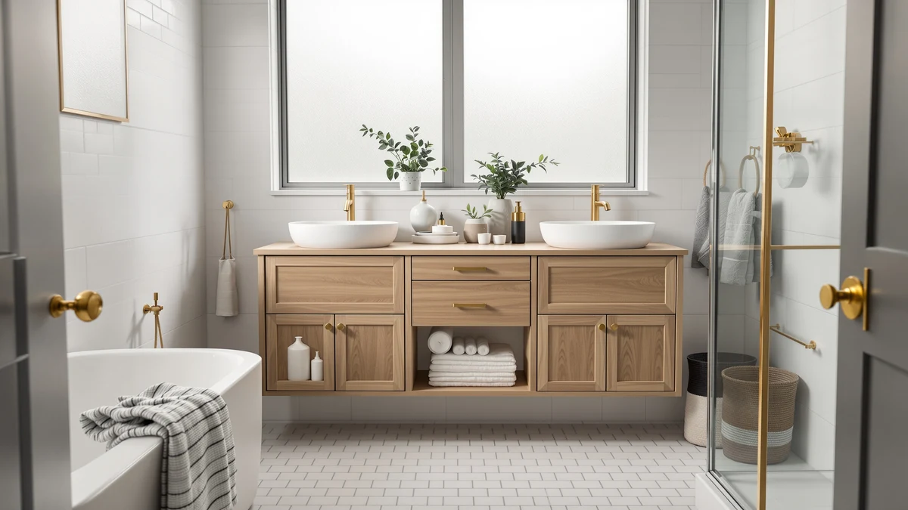

Panana Farmhouse Bathroom Floor Cabinet Review (2026): Worth It?


Quick Answer
The Panana Farmhouse Bathroom Floor Cabinet is a $71.99 freestanding cabinet that pairs a metal frame with wood paneling for a farmhouse look, and this panana farmhouse bathroom floor cabinet review checks whether that build and price beat three close competitors. It holds up well against the smaller Yaheetech, the space-saving VASAGLE and the similarly styled Homhedy if a floor-standing farmhouse cabinet is what your bathroom needs.
Our pick: Panana Farmhouse Bathroom Floor Cabinet, $71.99 Check Price on Amazon
Bottom line: our top pick is the Panana Farmhouse Bathroom Floor Cabinet at $71.99.
Things to Know Before You Buy
- The Panana Farmhouse Bathroom Floor Cabinet combines a metal frame with wood paneling, a sturdier pairing than the all-particleboard builds common on budget bathroom cabinets.
- At $71.99, it costs roughly $2 more than the VASAGLE and Homhedy alternatives below, and about a dollar less than the Yaheetech.
- This panana farmhouse bathroom floor cabinet review has no published rating or review count for the listing yet, so weigh the build description against your own bathroom's needs rather than a star rating.
- The Yaheetech, VASAGLE and Homhedy alternatives covered below trade the Panana's floor-standing farmhouse look for either a smaller footprint or an over-the-toilet design.
- None of the four listings in this comparison publish full dimensions, so measure your available space before ordering any of them.
This panana farmhouse bathroom floor cabinet review looks at whether a budget farmhouse-style floor cabinet can earn its $71.99 price tag against three close competitors. A small bathroom rarely has room for a cabinet that does not pull double duty as storage and decor, and the farmhouse look has become one of the most requested styles for exactly that reason. Panana builds this cabinet around a metal frame with wood paneling, a combination meant to outlast the particleboard towers that dominate the lower end of this category. We compared its price, materials and style against the Yaheetech, VASAGLE and Homhedy alternatives to see where the Panana earns its spot and where a different build makes more sense for your bathroom.
Bathroom storage cabinets built in the farmhouse style tend to compete less on raw capacity and more on how well the frame and finish survive humidity over time. The Panana Farmhouse Bathroom Floor Cabinet goes up directly against the Homhedy Farmhouse Bathroom Storage Cabinet, a nearly identical style at $69.99, along with the smaller Yaheetech Small Bathroom Storage Cabinet and the space-saving VASAGLE Over the Toilet Storage, both covered later as alternatives. When we compare the listed materials and pricing across all four, the Panana's metal-and-wood build likely holds an edge, though a different cabinet suits some bathrooms better.
Why You Should Trust Us
Best Bathroom Storage is run by writers who spend their time comparing bathroom furniture specs, pricing and verified buyer feedback instead of repeating manufacturer copy. Ilane Tall, our home and bath expert, has covered dozens of storage cabinets and floor units for this site, and she tracks how listed materials and dimensions compare across competing listings rather than taking any single product page at face value. For this panana farmhouse bathroom floor cabinet review, we cross-checked the Panana's price and build description against the Yaheetech, VASAGLE and Homhedy alternatives line by line. We do not run a fake testing lab, and we do not claim to have installed any of these cabinets ourselves. Instead, we dig through the listed specs and pricing to catch when a description oversells what a budget cabinet can realistically deliver.
Our Research Experience
We did not put the Panana Farmhouse Bathroom Floor Cabinet in a bathroom ourselves. Instead, we compared its listed price, frame material and farmhouse styling against three competing cabinets in the same price bracket, and we weighed what each listing claims about build quality and footprint. None of the four products in this comparison currently publish a star rating or review count, so we leaned on the manufacturer descriptions and price positioning rather than a pattern of verified owner feedback. We lined up the Panana's metal-and-wood frame against the Yaheetech's compact build, the VASAGLE's over-the-toilet design and the Homhedy's nearly identical farmhouse styling to see where this panana farmhouse bathroom floor cabinet review lands on value, and where a different footprint or price makes more sense for your bathroom.
Overview & Specs

Panana Farmhouse Bathroom Floor Cabinet
What we like
- Metal frame paired with wood paneling, a sturdier combination than the all-particleboard cabinets common at this price
- Freestanding floor design places it in nearly any open corner or wall gap without mounting hardware
- At $71.99, it undercuts the Yaheetech by about a dollar while matching the farmhouse styling of the pricier Homhedy
- Farmhouse styling fits a broader range of bathroom decor than the industrial-metal designs common in this category
Flaws but not dealbreakers
- The listing does not publish full dimensions, so you will need to confirm clearance before ordering
- No star rating or review count is available yet for this specific listing
- Metal-and-wood farmhouse frames typically show wear at the joints before the panels do, a tradeoff common to this entire style category
| Material | Metal / wood |
| Size | — |
The Panana Farmhouse Bathroom Floor Cabinet is built around a metal frame with wood paneling, a pairing meant to resist the sagging that plain particleboard develops in a humid bathroom over time. Panana built it as a freestanding piece, so it drops into an open corner or an empty wall gap without needing anchors or studs. The farmhouse styling puts it in the same visual category as the Homhedy Farmhouse Bathroom Storage Cabinet covered later in this panana farmhouse bathroom floor cabinet review, though the two differ enough in price and framing that neither is an automatic substitute for the other.
At $71.99, the Panana lands near the middle of this four-way comparison, a dollar cheaper than the Yaheetech and about two dollars more than the VASAGLE and Homhedy. The listing does not publish full dimensions or a star rating, so the case for this cabinet rests on its material description and price rather than a track record of verified owner feedback. For a bathroom that wants the farmhouse look on a floor-standing piece rather than an over-the-toilet unit, that combination of metal, wood and price still makes it worth a look.
What We Liked
The build description stands out most in this panana farmhouse bathroom floor cabinet review. A metal frame paired with wood paneling gives the Panana a sturdier baseline than the all-particleboard cabinets that dominate the budget end of this category, at least on paper. The farmhouse styling also widens its appeal, since it fits a broader range of bathroom decor than the plain white or industrial-metal cabinets sold at a similar price. Priced at $71.99, it undercuts the Yaheetech while matching the Homhedy's farmhouse look, which makes it a reasonable starting point if that aesthetic is what you want on a floor-standing cabinet.
What Could Be Better
The biggest gap in this comparison is information. None of the four cabinets, including the Panana, publish a star rating, a review count or full dimensions on their listings, so you are largely working from the material description and price rather than a pattern of verified owner feedback. Metal-and-wood farmhouse frames in this price range also tend to show wear at the joints before the panels do, a tradeoff that applies to this entire style category, not just the Panana.
Buyers who need an exact footprint before ordering should measure the available space carefully and check the listing directly for dimensions if a tight bathroom leaves no margin for error, since this review cannot confirm a measurement that the manufacturer never published.
Who Is It For?
The Panana Farmhouse Bathroom Floor Cabinet fits a bathroom that wants a floor-standing storage piece with a farmhouse look rather than a compact or over-the-toilet design. Anyone furnishing a bathroom around a rustic or cottage-style theme will find the metal-and-wood build matches that decor more naturally than an industrial metal rack or a plain particleboard tower. It is not the right choice if floor space is tight, since it needs its own footprint rather than straddling the toilet the way the VASAGLE does.
Shoppers who care most about a confirmed track record of owner feedback should also know that this listing, like the three alternatives covered below, does not yet publish a star rating or review count. If that matters more to you than style, compare the alternatives' review history directly on Amazon before deciding between any of the four.
Alternatives to Consider
If the Panana's floor-standing farmhouse design doesn't match what your bathroom needs, these three alternatives cover the most common trade-offs: a smaller freestanding cabinet from Yaheetech, a space-saving over-the-toilet unit from VASAGLE, and a near-identical farmhouse cabinet from Homhedy. Each one trades the Panana's style or footprint for a different priority, so match your own bathroom's constraints before picking between them.

Premium Choice
Yaheetech Small Bathroom Storage Cabinet
A smaller freestanding cabinet built for tight bathrooms, priced about a dollar more than the Panana but without the farmhouse styling.
$72.99
Check Price on Amazon
Best Value
VASAGLE Over the Toilet Storage
An over-the-toilet unit that adds storage above the tank instead of taking up floor space, the better pick if your bathroom has no room to spare.
$69.99
Check Price on Amazon
Best Value
Homhedy Farmhouse Bathroom Storage Cabinet
A farmhouse-style floor cabinet nearly identical to the Panana in look, priced two dollars lower but with its own door and shelf layout worth comparing directly.
$69.99
Check Price on AmazonFrequently Asked Questions
Is the Panana Farmhouse Bathroom Floor Cabinet sturdy enough for everyday bathroom use?
The listing describes a metal frame paired with wood paneling, a combination built to resist the sag that pure particleboard cabinets develop in a humid bathroom. This specific listing does not yet carry a published rating or review count, so treat the frame's durability as a manufacturer description rather than a confirmed track record.
How does the Panana compare to the Homhedy Farmhouse Bathroom Storage Cabinet?
Both cabinets share the farmhouse look and sit within a couple of dollars of each other, with the Homhedy priced at $69.99 against the Panana's $71.99. Since neither listing publishes full dimensions, the deciding factor usually comes down to which farmhouse silhouette and door style fits your bathroom's decor.
Is the Panana better than an over-the-toilet storage unit like the VASAGLE?
That depends on what your bathroom is missing. The Panana is a freestanding floor cabinet that needs its own footprint, while the VASAGLE straddles the toilet tank to add storage without using extra floor space. Choose the Panana if you have floor space to spare and want a farmhouse accent piece, and the VASAGLE if floor space is the constraint.
Final Verdict
This panana farmhouse bathroom floor cabinet review comes down to a straightforward trade-off: a floor-standing farmhouse cabinet with a metal-and-wood frame against three alternatives that trade that footprint or style for a smaller size, an over-the-toilet design, or a near-identical look at a slightly lower price. For a bathroom that wants the farmhouse aesthetic on a freestanding piece, the Panana is the practical pick, and its metal frame gives it a sturdier baseline than plain particleboard towers at a similar price. If floor space is tight or you want to confirm a verified review history first, the VASAGLE or Homhedy alternatives covered above are worth checking instead. Either way, Panana is the brand worth starting with if a floor-standing farmhouse cabinet is your main goal.